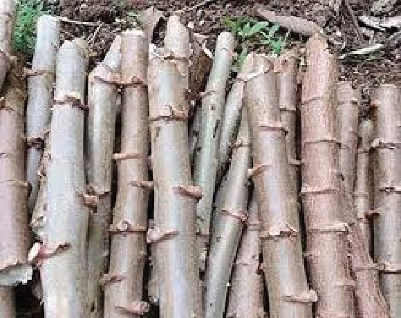
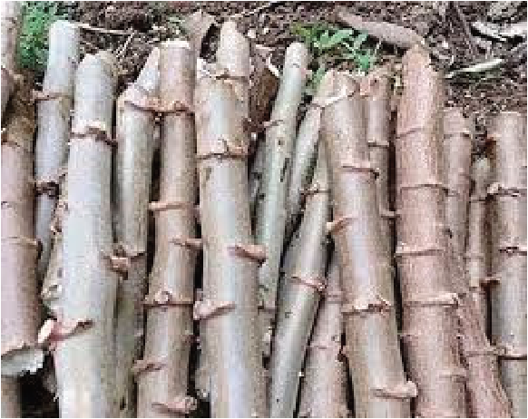

Agriculture for Secondary Schools
Cuttings should be stored in a cool, shaded environment for 2-3 weeks. Cuttings
can be prepared using a sharp knife at about 20-30 cm long. (refer to Figure 3.2)
Figure 3.2: Cassava stem cuttings
Source: https://www.amazon.in/Creative-Farmer-Esculenta-Cuttings-Planting/dp/B09QSKVBJL
Planting cassava
Cassava planting can be done either manually or using a machine. In Tanzania,
the planting process is mainly done manually. Cuttings can be planted on ridges,
mounds, or flat ground. To plant cassava, follow the following steps:
(i) Prepare ridges or mounds or flat land for planting cassava. Hole spacing
should be 1 meter between plants and 1 meter between rows (1m x 1m),
which gives a population of 10,000 cassava plants (Figure 3.3 (a)). Pick
the prepared cuttings of about 20-30 cm long.
(ii) Insert the cuttings about the centre of a ridge/mound at a depth of 5-10
cm into the soil. Ensure cuttings are positioned at a 45-degree angle with
at least two nodes buried in the soil and two above the ground.
(iii) Water the cuttings immediately after planting if the soil is dry.
The cuttings will take about 1-2 weeks to sprout after planting (refer to Figure 3.3 (b))
44
Student’s Book Form Two